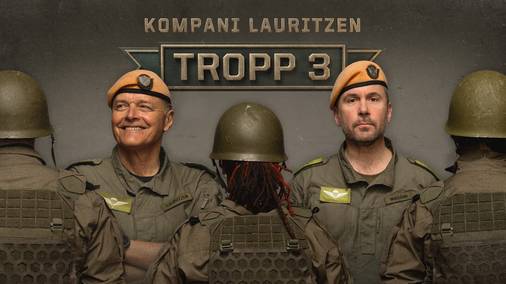
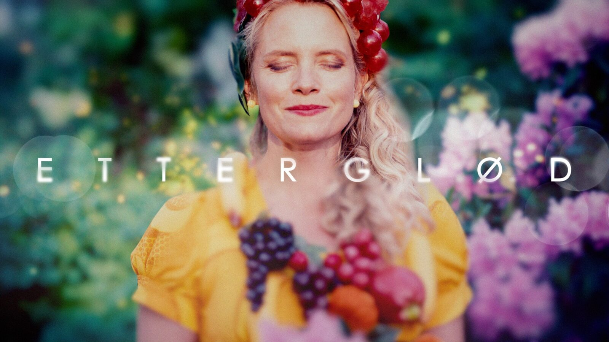
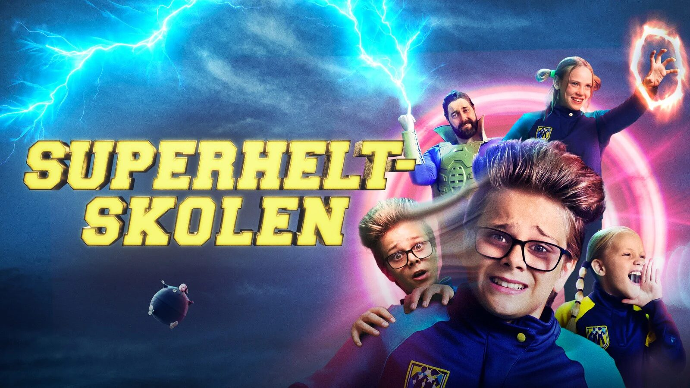
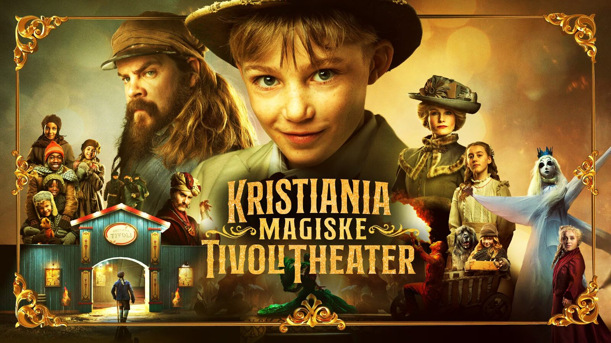
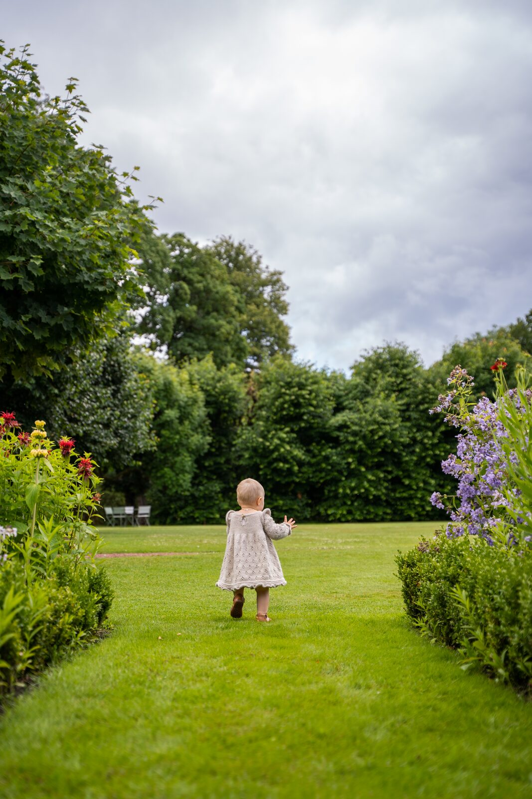
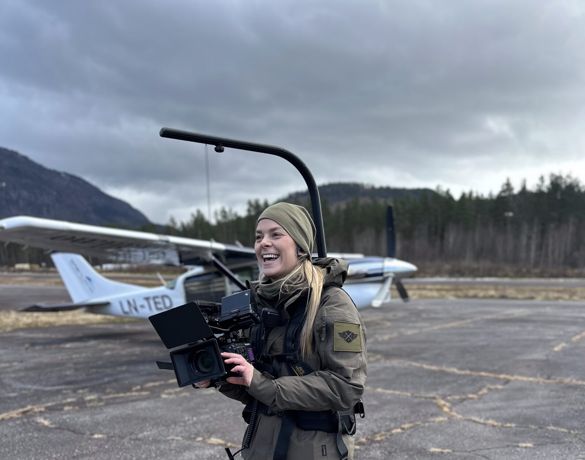
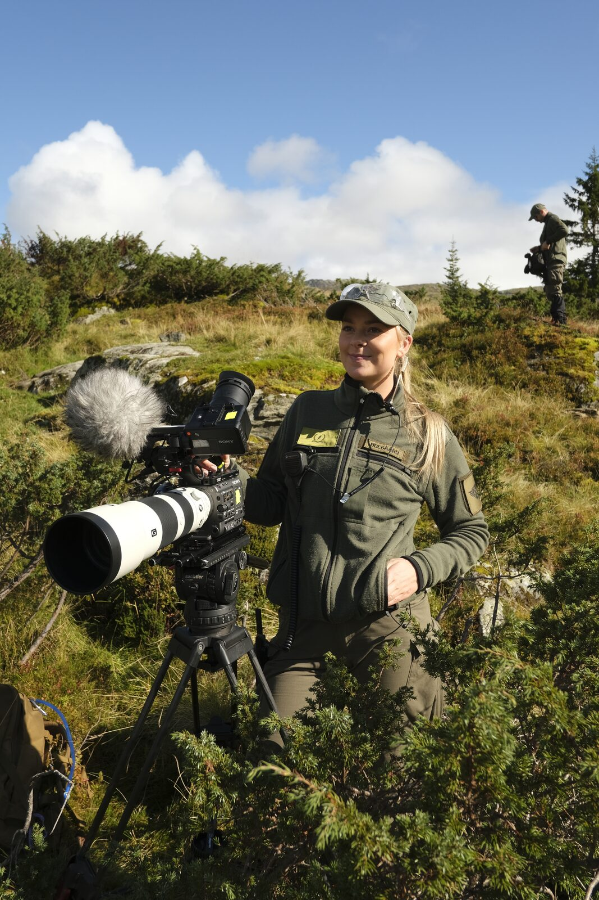
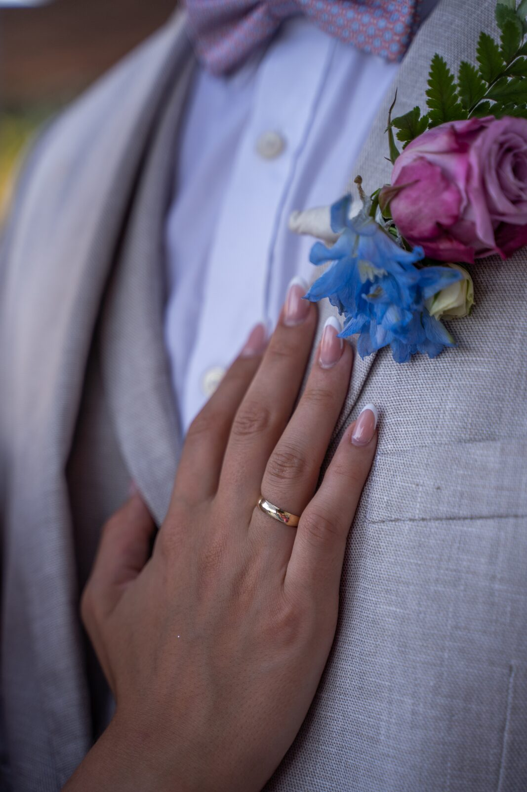

Kontakt
Har du et prosjekt
du vil realisere?
Ta kontakt, så snakker vi om idé, omfang og tidslinje.
Arbeid
Produksjoner og egne leveranser innen film, foto og klipp — i team og selvstendig.








Kontakt
Ta kontakt, så snakker vi om idé, omfang og tidslinje.